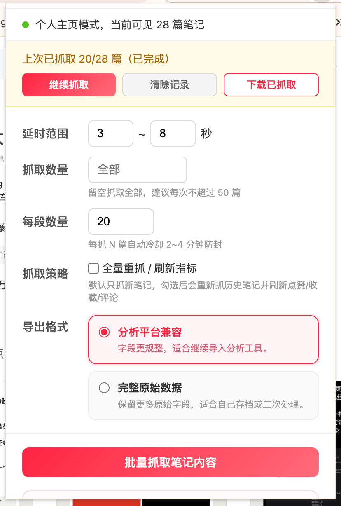
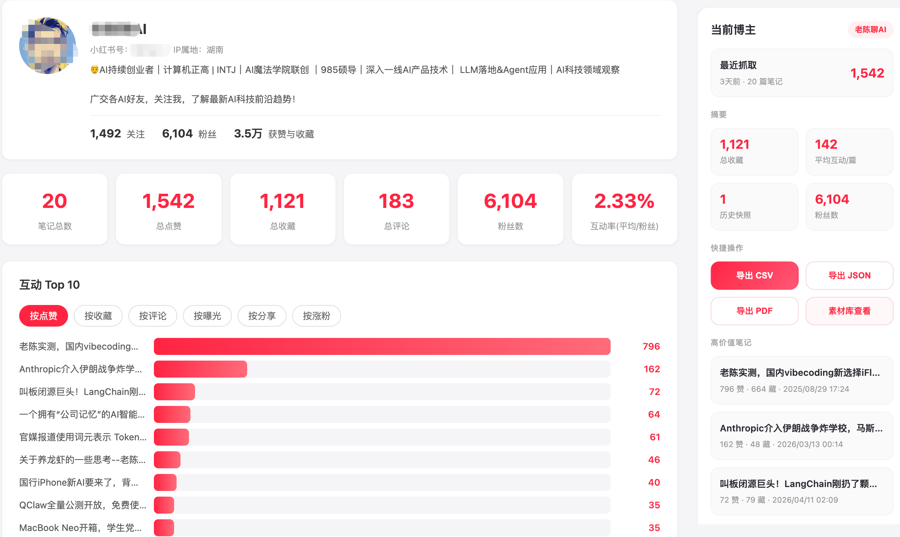
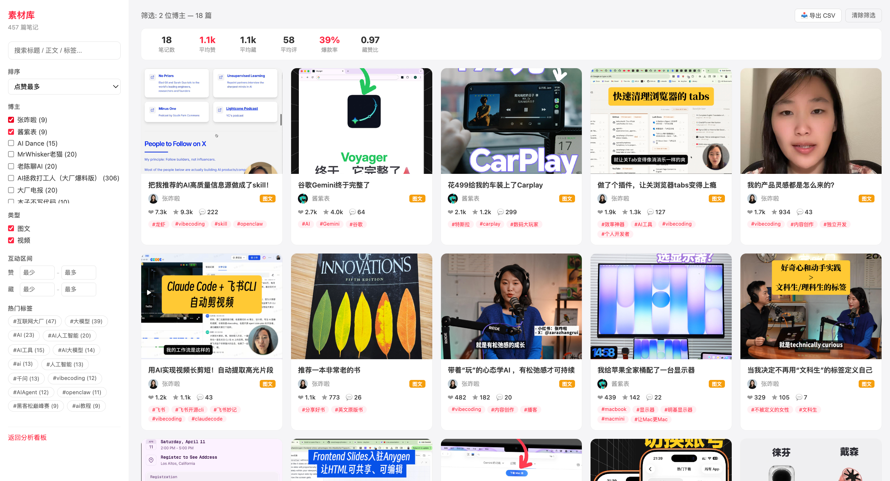

CHROME EXTENSION
OPEN SOURCE
LOCAL FIRST
Export public XiaoHongShu notes without buying a heavy platform.
HongShu Claw is built for one practical job: export public posts faster, keep structured fields, and continue with lightweight analysis.
Batch export any public profile
Keep title, body, tags, images, and engagement
Resume, cooldown, and export-ready workflow
Open source and reviewable
What you actually get
EXPORT READY
Captured notes
0
Export format
CSV / JSON
Next step
Dashboard
Top-content distribution
TOP NOTES
#ExportBody
#CompetitorResearch
#OpsReview
#ContentBackup
Export sample
CSV / JSON
title,likes,collects,comments,tags,image_count,publish_time
How I review breakout posts,982,510,41,#ops-review #content-analysis,5,2026-03-12
Workspace upgrade on a small budget,1260,441,38,#tools #workspace,7,2026-03-18
The fastest way to do competitor research,855,392,22,#competitor-research #planning,4,2026-03-21
Not a bloated platform
The product focuses on export and review, not a full heavy SaaS story.
Solve the valuable part first
Get public post data out first, then decide how deep you want to analyze it.
Public release, real scope
This site describes what the current open build really does, not a future fantasy roadmap.
WHY IT MATTERS
Most people do not need a giant platform. They just need structured export.
HongShu Claw sits between manual copy-paste and heavy paid tooling: simpler than scripts, lighter than platforms, and good enough to start working immediately.
Faster than manual copy-paste
Export structured results instead of opening and copying one post at a time.
Simpler than scripts
No Python setup, no deployment, no environment maintenance before you can start.
Lighter than big platforms
If export and lightweight review are enough, you do not need a full enterprise product.
Useful output, not just a demo
The result can go into Excel, Sheets, Python workflows, or the built-in dashboard and material library.
FEATURES
The feature set stays focused on capture, export, and lightweight review.
The goal is not to win by feature count. It is to help people export one profile cleanly and keep working from there.
Batch profile capture
Open a public profile, collect note cards, and extract each detail page instead of only supporting single-post export.
Rich field export
Keep title, body, tags, images, publish time, and engagement in one structured result set.
Resume support
Long jobs can continue after interruption instead of restarting from scratch.
Delay and cooldown control
Pacing settings help batch jobs feel closer to real browsing behavior.
Built-in dashboard
Review top notes, engagement distribution, tags, and title patterns without leaving the extension.
Material library
Turn captured results into a searchable content bank for later reuse.
SCREENSHOTS
The workflow is already visible in the product, not hidden behind mockups.

Popup capture entry
Start a batch task from a public profile page and control pacing before export.

Single creator dashboard
Review top-performing notes, creator details, and export actions in one place.

Material library
Search and filter captured notes across multiple creators as a reusable reference bank.
INSTALL GUIDE
Install it, open a profile page, and start exporting.
The product should feel like a practical tool, not a training course. The shorter the path to the first useful export, the better.
- Download the repository or release ZIP, then unzip it locally.
- Open Chrome and go to chrome://extensions, then enable Developer mode.
- Click Load unpacked and select the folder that contains manifest.json.
- Open a public XiaoHongShu profile page, click the extension icon, and start your export task.
This public build is installed through Chrome developer mode for now. It does not require manual account registration before first use.
Works on public pages
The extension is designed around public XiaoHongShu pages instead of account credential collection.
Browser-based workflow
The extension uses browser storage and product-managed data flows to keep export and review usable across the workflow.
Analysis layers on top
AI analysis, dashboard import, and continuity features sit on top of the export flow instead of blocking it.
PUBLIC RELEASE
The current site describes a real public build, not an over-promised pricing page.
For now, the focus is the open-source release: installable, export-capable, and usable for lightweight review. Packaging and monetization can come later.
Public release
Free
- Open repository
- Chrome developer mode install
- Batch capture, export, dashboard, and material library
- Best for validating fit before anything else
Possible enhanced build
TBD
- Clearer packaging and access control
- More stable sync and account binding
- More polished AI workflow
- Driven by real usage and feedback
What may come later
Later
- Store listing and stronger install flow
- Sharper commercial packaging
- Broader documentation and onboarding
- Only after the current product proves itself
FAQ
Answer the practical questions before people ask them.
Who is HongShu Claw for?
It fits XiaoHongShu operators, competitor researchers, content teams, and anyone who wants to export public content into a reusable dataset.
Does it only export, or can it analyze too?
It does both. Export is the main job, but the current public build also includes a dashboard, comparison views, and a material library.
What fields are included in export?
Typical fields include title, body text, tags, image links, likes, collects, comments, publish time, source URL, and related metadata.
Does it support AI analysis?
Yes. The public build already supports AI reports and follow-up analysis if you configure your own compatible API key.
How do I install the current public build?
Use Chrome developer mode for now: download the repository or release ZIP, unzip it, then load the unpacked folder that contains manifest.json.
GET STARTED
If you mainly need export and lightweight review, start with the open build.
That is the most honest version of the product today: open, installable, and useful right away.